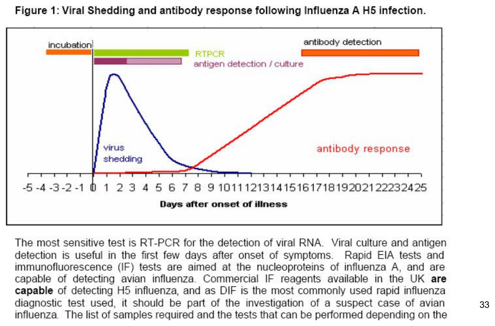
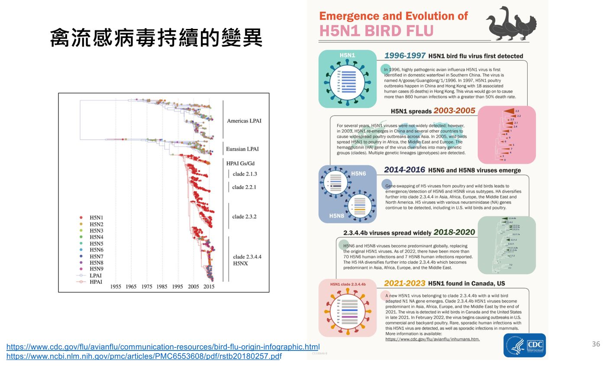

大方向與重點摘要
- 這是什麼病
- 由 A 型流感病毒（正黏液病毒科）引起的禽類疾病。病毒天然存在於水鳥（鴨、鷗、濱鳥）體內，通常不發病（低病原性，LPAI）；進入家禽後，HA 切位突變成高病原性（HPAI），可以全身出血、整群死亡。
- 為什麼重要
- WOAH 規定家禽分離到的 H5 與 H7 亞型都要通報；台灣發生時撲殺、清消。2022 年全球 67 國爆發、撲殺 1.3 億隻家禽；目前的主流 H5N1 clade 2.3.4.4b 已擴散到海獅、水貂、貓，2024 年起在美國乳牛與人類出現病例，是重要的人畜共通與公衛議題。
- 這章要抓的重點
-
- HA 與 NA 的功能：HA1 結合受體（禽型 SAα2,3Gal、人型 SAα2,6Gal）、HA2 融合；NA 切斷受體讓新病毒釋出（克流感的作用點）。
- HA 切位決定 HPAI vs. LPAI：和新城病的 F 蛋白同一套邏輯。
- HPAI 的判定標準：IVPI 數值、接種雞死亡比例、HA 切位序列。
- 典型病變：雞冠腫大、眼眶水腫、足出血、腺胃出血；台灣株與新城病、IB 在肉眼上分不出來。
- 抗原漂變與抗原移型，以及疫苗在防疫中的定位（補充工具，不取代撲殺與監測）。
- 最容易混淆
- 新城病：都會急性高死亡、腺胃出血、扭頸，而且都必須通報，肉眼無法區分，要靠病毒分離與鑑定。腎尿酸鹽沉積則要和傳染性支氣管炎區分。
- 考試可能怎麼問
（推測） - HA／NA 的功能與受體差異（為什麼禽流感不容易傳人）；HPAI 的 WOAH 定義與 IVPI 判讀；HA 切位與毒力的關係（可和新城病一起考）；抗原漂變 vs. 移型；與新城病的鑑別；野鳥與候鳥在傳播中的角色；疫苗使用的條件。
內容以老師講義為主體。標示「補充」的段落（含「讀書補充Note」）是講義以外的延伸；標示「推測」的是依講義強調處推測的出題方向，不是考古題。考試範圍以老師上課為準。圖片為老師講義截圖。
- 分類：正黏液病毒科；A 型（Alphainfluenzavirus）感染人、馬、豬、禽。80–120 nm、有封套，8 段 (–) ssRNA。
- 表面蛋白：HA（三聚體，H1–19）與 NA（四聚體，N1–11）。命名：型別／宿主／地點／株號／年份（HxNy）。
- 受體：禽型 SAα2,3Gal、人型 SAα2,6Gal。HA1 結合受體，HA2 在低 pH 下改變構形、融合、釋出 RNP。NA 切斷受體，抑制 NA（oseltamivir）病毒會聚集在細胞外。
- 毒力：HPAI 的 HA 切位有多個鹼性胺基酸，被多種細胞內蛋白酶切開 → 全身感染；LPAI 只被 trypsin 樣蛋白酶切開 → 侷限呼吸道與消化道。HPAI 由 LPAI 的 HA 切位突變而來。
- 判定 HPAI：IVPI ≥ 1.2（講義國內規範寫「≥」，WOAH 原文寫「> 1.2」）；或 8 隻 4–8 週齡雞靜脈接種後 10 天內死 6–8 隻（≥ 75%）；或 H5、H7 的 HA 切位序列與已知 HPAI 相似。
- 症狀與病變：潛伏期 3 天；頭臉水腫、產蛋下降、下痢、扭頸。HPAI：雞冠腫大、眼眶水腫、足出血、內臟漿膜出血、腺胃移行部出血壞死；台灣 H5 株另有胰臟出血壞死。
- 流行：H5N1 clade 2.3.4.4b 為主；逐漸失去季節性、持續在野鳥中流行；2024 年美國乳牛感染。
- 防治：生物安全（非開放式禽舍、防鳥）、通報、撲殺；疫苗是補充工具，用了必須配合病毒監測。
病毒構造與命名 Virology
流感病毒的四個屬理解
| 屬 | 宿主 |
|---|---|
| Alphainfluenzavirus（A 型） | 人、馬、豬、禽 |
| Betainfluenzavirus（B 型） | 人、海豹 |
| Gammainfluenzavirus（C 型） | 人、豬（輕微感染） |
| Deltainfluenzavirus（D 型） | 豬、牛、羊 |
四個屬都在正黏液病毒科（Orthomyxoviridae）。禽流感屬於 A 型。
病毒顆粒必考
- 球形（有時絲狀），80–120 nm，有封套。
- 基因體：8 段負義單股 RNA（A 型與 B 型）。分節的基因體是發生抗原移型的基礎（見抗原變異與疫苗）。
- 核糖核蛋白複合體（RNP）＝ vRNA ＋ 核蛋白（NP）＋ 聚合酶（PA、PB1、PB2）。
- 表面：HA（血球凝集素）、NA（神經胺酸酶）；另有基質蛋白 M。
命名必考
型別／宿主／分離地點／株號／年份（HxNy）。人類株省略宿主。
| 例子 | 解讀 |
|---|---|
| A/equine/Miami/1/1963 (H3N8) | A 型、馬、邁阿密、1 號、1963 年 |
| A/swine/Iowa/15/1930 (H1N1) | A 型、豬、愛荷華 |
| A/chicken/Scotland/1959 (H5N1) | A 型、雞、蘇格蘭 |
| A/Hong Kong/1/1968 (H3N2) | A 型、人（省略宿主）、香港 |
| B/Victoria/2/87 | B 型（B 型不標 HxNy） |
※ 和新城病比較：APMV 的命名是「血清型／鳥種／地點／編號／年份」，結構很像。
HA 與 NA：受體、融合、釋出必考
病毒進出細胞三步驟：HA1 黏上去 → HA2 融進去 → NA 切斷放出來。
| 血球凝集素 HA | 神經胺酸酶 NA | |
|---|---|---|
| 結構 | 三聚體（trimer）；HA1、HA2 兩個區域 | 四聚體（tetramer） |
| 亞型 | H1–19 | N1–11 |
| 功能 | HA1：結合受體（唾液酸） HA2：膜融合、脫殼 | 切斷受體：讓新生病毒從細胞表面釋出 |
| 藥物 | — | Oseltamivir（克流感）：NA 抑制劑；病毒無法釋出，聚集在細胞外 |
受體：為什麼禽流感不容易傳人
| 受體 | 鍵結 | 病毒偏好 |
|---|---|---|
| 禽型 | 唾液酸以 α2,3 連接半乳糖（SAα2,3Gal） | 禽流感病毒 |
| 人型 | 唾液酸以 α2,6 連接半乳糖（SAα2,6Gal） | 人流感病毒 |
※ 補充（非講義）：人類上呼吸道以 α2,6 受體為主，所以禽流感病毒不容易感染人、更不容易人傳人；豬同時有兩種受體，因此被稱為「混合器（mixing vessel）」，是講義 p.3 把豬放在禽與人之間的原因。人的下呼吸道仍有 α2,3 受體，所以 H5N1 感染人時會造成深部重症肺炎，卻不容易咳出來傳給下一個人。
讀書補充Note - HA 與 NA 是什麼
先講結論
HA 是鑰匙，負責開門進去；NA 是剪刀，負責剪斷繩子出來。H5N1 的 H5、N1 就是這兩個蛋白的亞型編號。
1. 名稱與分工
- HA：血球凝集素（Hemagglutinin），因為能讓紅血球凝集而得名，HA／HI 試驗就是這個原理。
- NA：神經胺酸酶（Neuraminidase），是一種酶，切掉唾液酸（neuraminic acid）。
- HA 的主要中和抗體集中在 HA1 球狀頭部；NA 的抗體只能減輕病情，不能中和感染。
2. NA 為什麼還要切
- 切掉新病毒表面與細胞表面的唾液酸，病毒才能脫離細胞，也不會彼此黏成一團。
- 也能切開黏液裡的唾液酸（誘餌），讓病毒鑽到上皮。
- HA 與 NA 的活性要互相平衡：HA 結合太強而 NA 太弱，病毒出不去；NA 太強，病毒又黏不上細胞。
要不要背
- 一定要會
- HA1 結合受體、HA2 融合；NA 切斷受體讓病毒釋出；oseltamivir 抑制 NA。
- 懂原理就好
- HA／NA 的平衡、NA 對黏液的作用。
- 不用背
- 名稱由來（hemagglutination、neuraminic acid）。
補充：以上皆非講義內容；「要不要背」依講義強調處判斷，以老師上課為準。
HA2 的融合過程
HA 一開始是一條前驅蛋白 HA0，要被宿主蛋白酶切成 HA1＋HA2（雙硫鍵相連）才有感染力。切開後 HA2 的 N 端露出疏水的融合胜肽（fusion peptide），就是下圖流程中「疏水區」的來源。切位如何決定毒力見第 4 節。
※ 補充（非講義）：低 pH 同時會讓 M2 離子通道把 H⁺ 送進病毒內部，使 RNP 與 M1 分離（脫殼），amantadine 就是阻斷 M2。RNP 進入細胞質後會再進細胞核複製，流感是少數在核內複製的 RNA 病毒。內體膜融合時，HA2 摺成髮夾狀，把病毒套膜與內體膜拉在一起。
HPAI vs. LPAI：HA 切位決定毒力必考
和新城病的 F 蛋白一模一樣的邏輯：切位上的鹼性胺基酸越多，能切開它的蛋白酶越多，病毒就能到越多器官。
| 低病原性 LPAI | 高病原性 HPAI | |
|---|---|---|
| HA0 切位 | 少數鹼性胺基酸（例：RETR） | 多個鹼性胺基酸（例：RERRRKKR） |
| 切開它的酶 | 只有 trypsin 樣蛋白酶，只存在於呼吸道與消化道上皮 | 很多種細胞內蛋白酶，全身都有 |
| 感染範圍 | 侷限呼吸道與消化道 | 散佈全身 |
| 來源與臨床 | 在水禽（鴨、鷗、濱鳥）中維持，不明顯發病 | 由 LPAI 的 HA 切位突變而來；嚴重疾病 |
HPAI 是由 LPAI 在家禽中傳播時，HA 切位突變而來。目前造成高病原性的幾乎都是 H5 與 H7，所以 WOAH 規定家禽分離到的 H5、H7 都要通報，即使當下是低病原性，也要定序切位確認。
讀書補充Note - 什麼是鹼性胺基酸？為什麼切位要有它
先講結論
切位的鹼性胺基酸（R、K）越多，越多種蛋白酶認得它，其中包含幾乎每個細胞都有的 furin，所以病毒能在全身的細胞裡被活化。
1. 什麼是鹼性胺基酸
- 側鏈在生理 pH 下帶正電：精胺酸 R（Arg）、離胺酸 K（Lys）；組胺酸 H（His）只有部分帶電。
- 切位序列（例：RERRRKKR）要看的是 R 與 K。
2. 為什麼是它：蛋白酶靠電性辨識
| LPAI | HPAI | |
|---|---|---|
| 切位 | 單一個 R（例：RETR） | 連續多個 R／K（例：RERRRKKR） |
| 辨識的酶 | Trypsin 樣酶：活性位帶負電，吸住單一個正電的 R／K，切在它後面 | Furin 等前蛋白轉化酶（proprotein convertase）：要辨識 R-X-R／K-R 這串 motif，所以需要多個鹼性胺基酸 |
| 酶的位置與分布 | 細胞外、黏膜表面；只在呼吸道與消化道上皮 | 細胞內的高基氏體（trans-Golgi）；幾乎所有細胞都有 |
| 結果 | 病毒要走到有 trypsin 的上皮才被活化 | 任何被感染的細胞產出的病毒，一離開就已經有感染力 → 全身擴散 |
要不要背
- 一定要會
- 三句話：①HA0（ND 是 F0）要被宿主蛋白酶切開才有感染力；②切位 R／K 越多，越多種蛋白酶能切；③所以強毒株全身感染，弱毒株只在呼吸道與腸道。
- 懂原理就好
- 正電的 R／K 被帶負電的酶活性位吸住；trypsin 與 furin 的差別在「單一 R」還是「R-X-R／K-R motif」。
- 不用背
- 「只有 H5、H7 會變成 HPAI」是目前已知現象，不是絕對規則，成因尚未完全清楚，一般推測與這兩個亞型的 HA 基因 RNA 結構在複製時容易發生插入有關。
補充：以上皆非講義內容；「要不要背」依講義強調處判斷，以老師上課為準。
生態、宿主與傳播
自然循環與跨物種傳播理解
- 自然循環：濱鳥與水禽之間循環，不明顯發病。
- 大流行循環：水禽 → 家禽 → 哺乳類（主要是豬）→ 人。
- 野鳥帶有 H1–H16 全部亞型；蝙蝠另有 H17、H18。
傳播必考
- 感染禽經呼吸道、結膜、糞便排出病毒。
- 直接接觸，或間接經空氣飛沫、揚塵、昆蟲、器具、人員傳染。
- 不同於哺乳動物只限於呼吸道感染，鳥禽的消化道感染也很重要（所以糞便汙染水源是水禽間傳播的主要途徑，補充）。
- 候鳥攜帶病毒，沿遷徙路線散佈。台灣位於東亞–澳洲遷徙路線上（補充，依講義 p.37 地圖）。
臨床症狀與病變
臨床症狀必考
- 潛伏期 3 天。症狀變異大，受品種、年齡、性別、共同感染、環境、病毒毒力影響。
- 呼吸異常、腸炎、生殖道與神經症狀：羽毛膨鬆、活力降低、食慾減退、呼吸症狀、頭臉水腫、產蛋下降、下痢、扭頸。
- 發病率與死亡率變異大：一般發病率高、死亡率低；但也有兩者都達 100% 的。
肉眼病變必考
- LPAI：輕微的消化道與呼吸道感染。
- HPAI：全身臟器充出血，並有各種炎症滲出液。
- 典型病變：雞冠腫大、眼眶水腫、足出血、內臟漿膜出血、腺胃移行部出血腫脹壞死。
- 台灣株：造成腺胃乳突部出血，肉眼無法和新城病區分；造成的腎尿酸鹽沉積無法和 IB 區分；台灣的 H5 株也造成胰臟出血壞死。
組織學病變理解
- 各臟器炎症：竇炎、氣管炎、肺炎、氣囊炎、腸炎、腹膜炎，以及充血、出血、水腫、壞死。
- 腦炎、淋巴球圍管現象、神經膠細胞增生（和新城病的神經病變很像）。
鑑別診斷 Differential Diagnosis必考
四個呼吸道＋產蛋下降的病毒病，內容取自本課程四份講義。和新城病、傳染性支氣管炎頁面的表格是同一張。
| 高病原性禽流感（HPAI） | 新城病（ND） | 傳染性支氣管炎（IB） | 傳染性喉頭氣管炎（ILT） | |
|---|---|---|---|---|
| 病毒 | 正黏液病毒科，A 型；8 段 (–) ssRNA | 副黏液病毒科，APMV-1；(–) ssRNA | 冠狀病毒科；(+) ssRNA | 疱疹病毒科，GaHV-1；DNA |
| 分級 | H5、H7 須通報 WOAH；發生時撲殺 | 甲類；WOAH 通報 | 乙類 | — |
| 毒力決定 | HA 切位鹼性胺基酸 | F 蛋白切位鹼性胺基酸 | 多種病原型 | — |
| 毒力試驗 | IVPI ≥ 1.2；或 8 隻死 6–8 隻 | ICPI ≥ 0.7 | — | — |
| 特徵病變 | 雞冠腫大、眼眶水腫、足出血、腺胃出血；台灣 H5 株胰臟出血壞死 | 腺胃乳突部出血、腸道淋巴組織潰瘍出血壞死 | 依型別：氣管、腎（尿酸鹽）、腺胃、輸卵管 | 侷限於呼吸道、核內包涵體；咳血 |
| 死亡率 | 變異大，可達 100% | vvND 近 100% | 低 | 嚴重型 5–70% |
※ 其他三病的完整筆記：新城病、傳染性支氣管炎、傳染性喉頭氣管炎。
急性高死亡＋腺胃出血 → 禽流感與新城病肉眼分不出來，兩者都要通報。雞冠腫大發紫、腳部皮下出血、胰臟出血壞死是偏向禽流感的線索，但確診仍要靠病毒分離、亞型鑑定、病原性鑑定。
檢驗與病原性判定 Diagnosis
依講義引用的〈高病原性家禽流行性感冒檢驗方法〉（109.10.15 農委會修正）與 WOAH 定義整理。
檢驗方法總覽理解
- 病毒分離
- 血球凝集抑制試驗（可區分病毒亞型）
- 病原性鑑定
- 分子檢驗
- ELISA
- 瓊脂凝膠免疫擴散（AGID）
- 血球凝集抑制試驗（HI）
採檢送驗理解
- 以發生臨床症狀 3 日內採得的檢體效果最好。
- 死禽：可採全身各組織臟器（氣管、肺、氣囊、腸、脾、胰、腎、腦、肝、心），也可採喉頭與泄殖腔拭子；可分開或混合。
- 活禽：喉頭與泄殖腔拭子；幼小個體不易採集時，改採新鮮排遺。
- 拭子保存在含抗生素的 PBS，或含蛋白質與抗生素的輸送培養液。
- 立即以低溫冷藏送驗，或 4°C 最多 4 天；長期保存 –80°C，避免重複冷凍解凍。用乾冰保存或運送要密封，防止二氧化碳滲入使 pH 下降、病毒失活。
病毒分離理解
※ 尿囊液有血球凝集性，不一定是流感：講義提醒也可能是禽副黏液病毒（例如新城病）或家禽里奧病毒，所以還要再鑑定。分子方法可用 RT-PCR、real-time RT-PCR、RT-LAMP。
病原性判定必考
| 方法 | 做法 | 判為 HPAI |
|---|---|---|
| 靜脈接種病原性指數（IVPI） | HA 力價 > 1:16 的尿囊液 10 倍稀釋，靜脈接種 10 隻 6 週齡 SPF 或 SAN 雞，每隻 0.1 mL；每 24 小時觀察、持續 10 天。正常 0、發病 1、嚴重發病 2、死亡 3（死亡後每天都記 3）。10 天總分 ÷ 100 | IVPI ≥ 1.2 （3.00＝全部 24 小時內死亡；0.00＝10 天內都沒症狀） |
| 接種雞隻死亡率 | 尿囊液 10 倍稀釋，靜脈接種 8 隻 4–8 週齡 SPF 或 SAN 雞，每隻 0.2 mL，觀察 10 天 | 死亡 6、7 或 8 隻（死亡率 ≥ 75%） |
| HA0 切位序列 | RT-PCR 增幅 HA 基因片段、定序 | H5、H7 的切位胺基酸序列與已知 HPAI 相似 |
講義定義：出現呼吸症狀、沉鬱、下痢、無毛部皮膚或肉垂發紺、頭或臉水腫、神經症狀其中一種 → 發病（1 分）；超過一種 → 嚴重發病（2 分）。
講義 p.27、p.29 的國內規範寫「IVPI 大於等於 1.2」；p.31 的 WOAH 英文原文寫「greater than 1.2」。考試寫 1.2 即可，作答時可註明出處。
LPAI 的判定
- 家禽分離的 H5、H7：動物試驗不具高病原性，且切位序列不像 HPAI → H5／H7 LPAI。
- 野鳥與水禽常見的 LPAI 株：切位 –1 到 –3 位的鹼性胺基酸數量在 2 個以下（參照 OFFLU 公告序列）。
IVPI 與 ICPI 比較必考
| IVPI（禽流感，也用於新城病） | ICPI（新城病） | |
|---|---|---|
| 雞 | 10 隻 6 週齡 | 10 隻 1 日齡 |
| 途徑 | 靜脈 | 腦內 |
| 觀察 | 10 天 | 8 天 |
| 分數 | 0–3（死亡 3） | 0–2（死亡 2） |
| 門檻 | 禽流感 HPAI：≥ 1.2 | 新城病：≥ 0.7 |
病毒排出與抗體的時間理解

※ 講義 p.32 另有 WOAH 的方法用途表：確認臨床病例建議用病毒分離與 real-time RT-PCR（+++）；HI 可鑑別 H5 或 H7 抗體，用於疫苗後免疫狀態評估（+++）。
疫情現況與跨物種傳播
全球理解
- 2022 年：全球五大洲 67 國發生 HPAI，撲殺 1.3 億隻家禽。
- 2023 年至今：新增 14 國頻繁發生，多在中南美洲。
- 主要流行亞型：H5N1 clade 2.3.4.4b。
- WOAH（2023）：禽流感逐漸失去季節性，高病原性株持續在野鳥中流行，增加病毒演化與跨物種傳播的機會。

台灣看過
115 年（2026）1–8 月：禽場 HPAI 15 例（陸禽場 13、水禽場 2；全部 H5N1），撲殺約 43 萬隻；另有屠宰場確診 9 例、禽場低病原性 1 例。分布在嘉義、雲林、彰化、臺南、屏東、臺中。案例大多是業者主動通報，也有屠宰場通報回溯、主動監測與檢舉案。
跨物種傳播與人畜共通必考
- H5N1 已造成西班牙水貂養殖場、芬蘭毛皮動物養殖場、秘魯海獅大量死亡，以及南韓、波蘭貓死亡。
- 美國乳牛：2024 年 3 月首次報告乳牛感染；講義引述截至報導時 14 州 203 個牛群、14 人；前 13 例都接觸過牛或家禽，第 14 例沒有接觸染病動物（可能的人傳人）。
- 美國乳牛的 H5N1 是 2.3.4.4b 與北美 LPAI 重組而來的 genotype B3.13，2024 年 3 月起在德州乳牛擴散，再傳到其他州、家禽、貓（未殺菌生乳）（講義 p.44 圖）。
- 台灣（防檢署，113.5.17）：6 縣市 12 場乳牛採樣，全部陰性；國產乳品安全。
防疫檢疫與生物安全
相關法規看過
- 動物傳染病非疫區之國家（地區）一覽表
- 高病原性家禽流行性感冒檢驗方法
- 防範家禽流行性感冒（H5、H7 亞型）緊急應變措施手冊
- 家禽（批發）市場、家禽理貨場及屠宰場發生禽流感案例處置流程（屠宰場確診案例：屠體依法銷燬）
禽場生物安全必考
講義引用農委會「生物安全金口訣」與防檢署《2021 禽場生物安全手冊》：
| 原則 | 做法 |
|---|---|
| 隔絕野鳥 | 非開放式禽舍；防鳥、防鼠；圍網破損要定期維修 |
| 人車進出 | 人車進出必消毒、衣鞋更換；換鞋區畫清楚淨區與汙染區界線；每棟禽舍出入口設消毒踏槽，鞋子至少浸泡 15–20 秒 |
| 飼料與環境 | 飼料桶設在禽場圍牆邊，避免飼料車進場；糞便廢料定時清；死廢動物不亂丟；雜物定期清理 |
| 消毒 | 空場消毒要確實、統進統出；定期檢查消毒藥劑是否在有效期內 |
| 觀察與通報 | 禽群觀察要認真，發現可疑快通報 |
| 用藥 | 用藥前看清楚、非法藥品不使用 |
抗原變異與疫苗
抗原漂變 vs. 抗原移型必考
| 抗原漂變 Antigenic drift | 抗原移型 Antigenic shift | |
|---|---|---|
| 機制 | HA、NA 基因點突變逐漸累積 | 兩種不同病毒感染同一細胞，基因片段重組（例如人流感＋豬流感） |
| 結果 | 抗原小幅改變，原有抗體效果下降 | 出現全新的 HA 或 NA 組合，族群幾乎沒有免疫力 |
| 前提（補充） | RNA 病毒複製錯誤率高 | 基因體分成 8 段 |
| 後果（補充） | 季節性流行；疫苗株需要定期更新 | 可能造成大流行 |
疫苗技術理解
- 八質體系統（反向遺傳）：6 個來自主幹株 A/PR/8/34（H1N1）的內部基因質體，加上 2 個流行株的 HA、NA 質體，在 293T 與 MDCK 細胞中組裝出疫苗株。
- mRNA 疫苗（Ceva RESPONS AI H5）：自我複製型合成 RNA，編碼 H5 clade 2.3.4.4b 的 HA；1 μg RNA，肌肉注射 2 劑、間隔 4 週，–80°C 保存；每劑含 375 μg 角鯊烯佐劑。
- 重組 HA＋新城病雙價死毒疫苗（BI Volvac BEST AI+ND）：重組 HA 蛋白 256 HAU＋不活化新城病 La Sota 128 HAU。
- 其他田間試驗疫苗：BI VAXXITEK HVT+IBD+H5、Ceva Vectormune AI（火雞疱疹病毒載體）。
疫苗的定位必考
| 時間 | 事件 |
|---|---|
| 2022 年 5 月 | 歐盟執委會將禽流感疫苗列為防疫補充工具 |
| 2023 年 5 月 | WOAH 大會決議：①疫苗作為防疫補充工具；②使用後須配合病毒監測；③使用疫苗不應成為貿易障礙 |
| 2023 年 10 月 | 法國肉鴨強制施打禽流感疫苗；EFSA 公布使用建議 |
| 2023–2024 年 | 荷蘭蛋雞、法國土番鴨田間試驗多種疫苗 |
- 預防性接種是最佳策略：針對高風險傳播區內最易感、最具傳染性的禽種；多次接種可增強保護。
- 爆發時：以案例場為中心 3 公里半徑內做緊急保護性接種。
- 疫苗是主動監測、被動監測與生物安全的補充，不是替代。
- 接種後要用高靈敏度方法監測；做病毒分離、基因定序與抗原性分析，以早期發現突變株；定期病毒學檢測，證明接種區沒有 HPAI 感染。
※ 補充（非講義）：為什麼打疫苗還要監測？疫苗可以讓雞不發病，卻不一定阻止感染與排毒，病毒可能在打過疫苗的雞群中「靜默」傳播與演化。所以要能區分感染與接種（DIVA）並持續監測，這也是貿易上擔心疫苗的原因。
考試方向（推測）
依講義重點推測，不是依考古題整理。
| 可能的考法 | 答題重點 |
|---|---|
| HA 與 NA 的結構與功能 | HA 三聚體、H1–19，HA1 結合受體、HA2 融合；NA 四聚體、N1–11，切斷受體使病毒釋出 |
| 禽型與人型受體 | SAα2,3Gal vs. SAα2,6Gal |
| HPAI 與 LPAI 的分子差異 | HA0 切位多個鹼性胺基酸 → 多種蛋白酶可切 → 全身感染；LPAI 只被 trypsin 樣酶切 |
| HPAI 的定義 | IVPI ≥ 1.2；或 8 隻 4–8 週齡雞靜脈接種 10 天內死 6–8 隻；或 H5／H7 切位序列像 HPAI |
| IVPI vs. ICPI | 6 週齡靜脈 10 天 0–3 vs. 1 日齡腦內 8 天 0–2 |
| 典型病變與鑑別 | 雞冠腫大、眼眶水腫、足出血、腺胃出血；台灣株與新城病（腺胃）、IB（腎）肉眼分不出 |
| 抗原漂變 vs. 移型 | 點突變累積 vs. 分節基因重組 |
| 命名法 | 型別／宿主／地點／株號／年份（HxNy） |
| 為什麼要通報所有 H5、H7 | HPAI 由 LPAI 突變而來，幾乎都是 H5、H7 |
| 疫苗的使用原則 | 補充工具、需配合監測、不應成為貿易障礙；預防性接種最佳；爆發時 3 公里緊急接種 |
學習重點整理
考前快速掃過。
練習題 Practice Quiz
先自己作答再點開答案。Q11 是計算題，Q12–Q14 是臨床情境題。
HA 是三聚體（H1–19），HA1 結合受體、HA2 在低 pH 下介導膜融合；NA 是四聚體（N1–11），切斷受體讓新病毒釋出。NA 抑制劑（oseltamivir）讓病毒聚集在細胞外、無法釋出擴散，而不是不能進入細胞。
禽型受體 SAα2,3Gal、人型受體 SAα2,6Gal。講義圖說另提到 9-O-acetyl 唾液酸是 C 型流感的受體。
HA0 必須被宿主蛋白酶切成 HA1、HA2 病毒才有感染力。HPAI 的切位有多個鹼性胺基酸，可被很多種細胞內蛋白酶切開，病毒散佈全身；LPAI 只能被 trypsin 樣蛋白酶切開，而這種酶只在呼吸道與消化道上皮，所以只在這兩處增殖。新城病的 F 蛋白切位是同一套邏輯：強毒株有多個鹼性胺基酸，弱毒株只能被 trypsin 切。
相反。在水禽（鴨、鷗、濱鳥）中維持的是 LPAI，不明顯發病；HPAI 是 LPAI 的 HA 切位突變而來。不過講義也指出，近年高病原性株已持續在野鳥中流行，禽流感逐漸失去季節性。
HPAI：8 隻 4–8 週齡雞靜脈接種 0.2 mL 1/10 稀釋尿囊液，10 天內死 6、7 或 8 隻；或 IVPI > 1.2；H5、H7 低病原性株要再看 HA 切位序列。(A)(C) 是新城病的毒力指標，(D) 是 IB 的病毒分離特徵。
雞冠腫大、眼眶水腫、足出血是 HPAI 的典型病變，台灣 H5 株另有胰臟出血壞死。(A) 偏新城病、(C) 是 IB、(D) 是 ILT。但腺胃出血兩者都有，最後仍要靠實驗室確診。
講義提醒：有血球凝集性的尿囊液，最可能是 A 型流感，但也可能是禽副黏液病毒（例如新城病）或家禽里奧病毒，要再用 AGID 或 RT-PCR 確認型別，並用 HI、NI 或 RT-PCR 鑑定亞型。
抗原移型（shift）是分節基因重組；抗原漂變（drift）是點突變逐漸累積。流感基因體分成 8 段，所以能發生移型。
WOAH：①疫苗作為防疫補充工具；②使用後須配合病毒監測；③使用禽流感疫苗不應成為貿易障礙。EFSA：預防性接種是最佳策略；爆發時在高風險傳播區內，以案例場為中心 3 公里半徑內做緊急保護性接種；疫苗是監測與生物安全的補充，不是替代。
講義：以發生臨床症狀 3 日內的檢體效果最好；低溫冷藏送驗或 4°C 最多 4 天；長期保存 –80°C，避免重複冷凍解凍；乾冰保存要密封，以防二氧化碳使 pH 下降、病毒失活。
IVPI ＝ 10 天總分 ÷（10 隻 × 10 天）＝ 135 ÷ 100 ＝ 1.35，大於 1.2，判為 HPAI。總分 90 → IVPI 0.90，動物試驗不符合 HPAI；但因為是 H7，還要定序 HA 切位：序列與已知 HPAI 相似，仍判為 HPAI；不相似則為 H7 LPAI，仍需通報。
(1) 高病原性禽流感：急性高死亡加上雞冠腫大、頭臉水腫、足出血是典型病變，冬季、鄰近濕地（候鳥）也是危險因子。要和強毒型新城病鑑別，兩者都會腺胃出血、肉眼分不出，而且都必須通報。
(2) 立即通報主管機關，限制人車禽移動，不要自行處理死禽。
(3) 症狀 3 日內的檢體最好：死禽採氣管、肺、氣囊、腸、脾、胰、腎、腦、肝、心或喉頭與泄殖腔拭子；活禽採喉頭與泄殖腔拭子；放含抗生素的 PBS，低溫冷藏立即送驗。實驗室會做病毒分離、亞型鑑定與病原性鑑定（IVPI 或 HA 切位定序）。
(4) 開放式禽舍無法隔絕野鳥；可能還有圍網破損、沒有消毒踏槽、換鞋區界線不清、飼料車進場、消毒劑過期等問題。改善方向是非開放式禽舍、防鳥防鼠、人車消毒。
水禽本來就是流感病毒的天然宿主，感染後常不明顯發病，但會持續排毒，糞便汙染水源與環境，再傳給雞等陸禽。家禽分離到的 H5、H7 都要通報，因為 HPAI 就是由 H5、H7 的 LPAI 在家禽中傳播時，HA 切位突變而來；而且近年 H5N1 高病原性株也能在鴨、野鳥中不明顯發病地傳播。所以要通報並做病原性鑑定（動物試驗與切位定序），確認是高病原性還是低病原性。
講義的立場：疫苗是防疫的補充工具，不是替代，主要防控仍是監測（主動與被動）與生物安全；用疫苗必須配合病毒監測，包括高靈敏度診斷、病毒分離、基因定序與抗原性分析，以早期發現突變株，並定期證明接種區沒有 HPAI。WOAH 雖決議疫苗不應成為貿易障礙，但實際上仍需完整監測才能維持貿易信任。補充（非講義）：疫苗能減少發病，卻不一定阻止感染與排毒，病毒可能在打過疫苗的雞群中靜默傳播與演化；而流感會抗原漂變，疫苗株也要跟著更新。